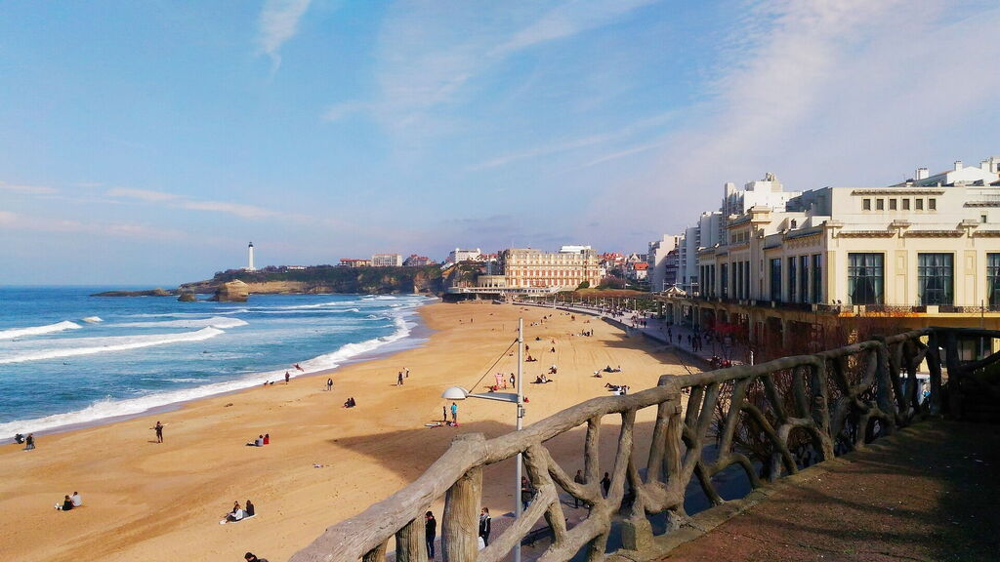
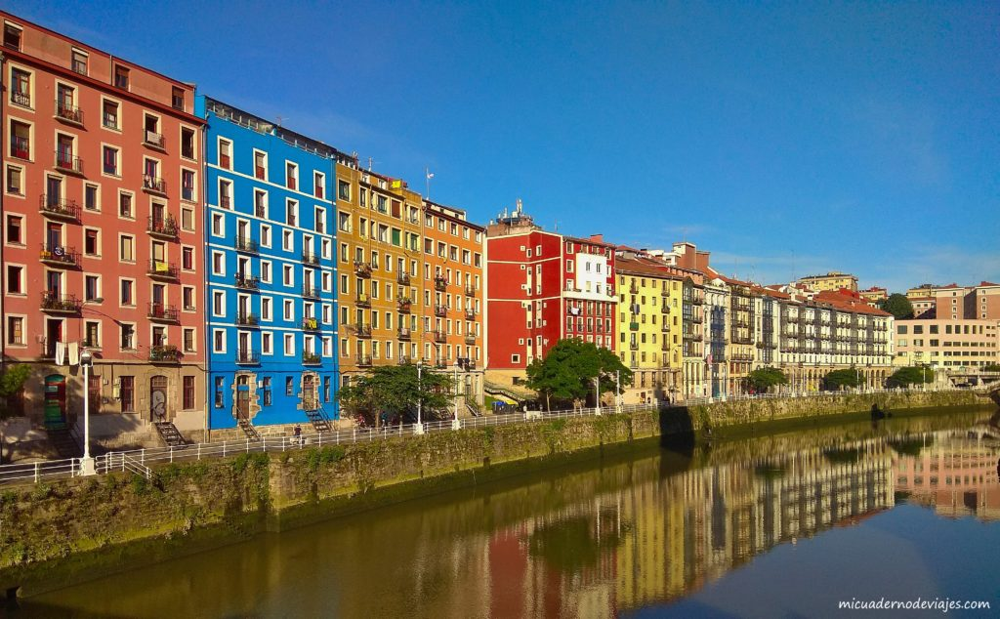

Lugares Imperdibles

La Playa de Biarritz
Un paraíso para los amantes de la playa y el surf. Las aguas de Biarritz son perfectas para disfrutar de deportes acuáticos o simplemente relajarte en la arena.

El Casco Antiguo de Bilbao
Recorre las calles estrechas y empedradas del casco antiguo de Bilbao, una zona llena de historia, bares de pintxos y una vibrante vida cultural.

Monte Igueldo en San Sebastián
Sube al Monte Igueldo para disfrutar de una de las vistas panorámicas más impresionantes de la Bahía de la Concha y de toda la ciudad.

Castillo de Butrón
Un misterioso castillo medieval rodeado de naturaleza. Es el lugar perfecto para los amantes de la historia y la arquitectura.

Puente Colgante de Bizkaia
Patrimonio de la Humanidad, este impresionante puente ofrece unas vistas inigualables de la ría de Bilbao y la costa vasca.